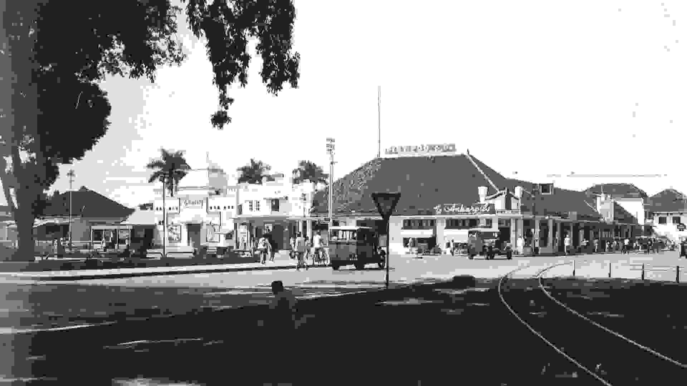

Perjalanan perkembangan Kota Malang dari masa ke masa

Kota Malang memiliki sejarah panjang yang dimulai sejak zaman Kerajaan Kanjuruhan pada abad ke-8. Bukti sejarah tersebut dapat dilihat dari prasasti Dinoyo yang menjadi salah satu peninggalan penting di wilayah Malang.
Pada masa kerajaan, wilayah Malang dikenal sebagai pusat pemerintahan Kerajaan Kanjuruhan yang memiliki peran penting dalam perkembangan budaya dan politik di Jawa Timur.
Pada masa penjajahan Belanda, Kota Malang berkembang pesat sebagai kota administrasi dan pendidikan dengan banyak bangunan bergaya kolonial yang masih dapat ditemukan hingga saat ini.
Saat ini, Kota Malang berkembang menjadi kota pendidikan dan pariwisata yang modern dengan berbagai fasilitas yang mendukung kehidupan masyarakat.